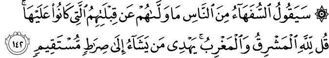

সূরা আল-বাক্বারাহ’র এই আয়াতে কিবলা পরিবর্তনের ঘটনা নিয়ে সুধীবৃন্দরা অনেক তর্ক দাঁড় করিয়েছেন। তাদের দাবি: যেখানে নবী ইব্রাহিম عليه السلام কা’বা মুখি হয়ে সালাত পড়তেন, সেখানে কেন রাসুল মুহাম্মাদ عليه السلام আল-আক্বসা মুখি হয়ে সালাত পড়তেন? উনি কেন নবী ইব্রাহিমের عليه السلام বিরোধিতা করলেন? কেনই বা মুসলিমদেরকে কা’বা মুখি হয়ে সালাত পড়তে হবে, যেখানে কিনা আল্লাহ تعالى কোনো একটি দিকে নির্দিষ্ট নন? যেকোনো একদিকে মুখ করে সালাত পড়লেই তো হয়?
আবার অমুসলিমরা দাবি করেন: হিন্দুদের মতো মুসলিমরাও কা’বা পূজা করে। দেখো না সবাই কা’বা মুখি হয়ে সালাত পড়ে? হাজ্জ হচ্ছে গণপূজা, যেখানে লক্ষ লক্ষ মুসলিম গিয়ে একদম কা’বার সামনে মাথা নত করে। কা’বার সামনে এভাবে মাথা নত করাটা পূজা না তো কী?
অন্যদিকে ইহুদি, খ্রিস্টানরা দাবি করে: মুসলিমদের একসময় আল-আক্বসা মুখি হয়ে সালাত পড়াটা ঐতিহাসিকভাবে ভুল ঘটনা, কারণ রাসুল মুহাম্মাদ عليه السلام -এর মারা যাওয়ার প্রায় একশ বছর পরে আল-আক্বসা মসজিদ তৈরি হয়েছে। এমনকি উমার (রা) যখন জেরুজালেম দখল করেন, তখন আল-আক্বসার জায়গায় ছিল শুধুই কিছু ময়লার স্তূপ। উনিই তো আল-আক্বসার গম্বুজ তৈরি করেন। তাহলে আগে আল-আক্বসা ছিল কীভাবে? সুতরাং কু’রআনে ভুল আছে! —ইহুদি, খ্রিস্টানদের এই যুক্তি এবং ঐতিহাসিক দলিল অনেক ‘আধুনিক মুসলিম’ এবং নাস্তিকরা লুফে নিয়েছে।
আসুন এই ভুল ধারণাগুলোর অবসান করি—
লোকদের মধ্যে বোকাগুলো বলবে, “কী ওদের প্রার্থনার দিক (কিবলা) পালটিয়ে দিলো, যেদিকে তারা মুখ করতো?” বলো, “পূর্ব, পশ্চিম সব আল্লাহর تعالى। তিনি যাকে চান তাকে সঠিক পথের দিকে পরিচালিত করেন।” [আল-বাক্বারাহ ১৪২]
ঘটনার প্রেক্ষাপট
রাসুল মুহাম্মাদ عليه السلام যখন মক্কায় ছিলেন, তখন তিনি যখন সালাত পড়তেন, তার সামনে কা’বা এবং আক্বসা দুটোই থাকতো। কিন্তু তিনি যখন মদিনা হিজরত করলেন, তখন মক্কা পড়ে গেল একদিকে, আর আক্বসা পড়ে গেল আরেকদিকে। যার ফলে তিনি যখন আক্বসা মুখি হয়ে সালাত পড়তেন, তখন কা’বা থাকতো তার পেছন দিকে। নবী ইব্রাহিমের عليه السلام প্রতি ভালবাসা, এবং তার চেয়েও বেশি কা’বার প্রতি টানের কারণে তিনি মাঝে মাঝেই আকাশের দিকে নির্বাক হয়ে তাকাতেন। যদিও তিনি মুখে কিছু বলতেন না, কিন্তু তিনি মনে মনে চাইতেন আল্লাহ تعالى যেন কা’বাকে কিবলা করে দেন। আল্লাহ تعالى তার এই গোপন চাওয়া পূরণ করলেন। সূরা আল-বাক্বারাহ’র আয়াত নাজিল হলো। আক্বসা থেকে কিবলা ঘুরে গেল কা’বার দিকে।[১৪]
আমি অবশ্যই দেখেছি তোমাকে বার বার আকাশের দিকে তাকিয়ে থাকতে। তাই আমি তোমাকে সেই কিবলা দিলাম, যা তুমি পছন্দ করো। এখন তুমি মাসজিদুল-হারাম-এর (কা’বা) দিকে মুখ করো। তোমরা (বিশ্বাসীরা) যেখানেই থাকো না কেন, এর দিকে মুখ করো। যাদেরকে কিতাব দেওয়া হয়েছে, তারা খুব ভালো করে বোঝে যে, এটি তাদের প্রভুর কাছ থেকে আসা সত্য। ওরা কী করে সে ব্যাপারে আল্লাহ تعالى বেখেয়াল নন। [আল-বাক্বারাহ ১৪৪]
কিন্তু আল-আক্বসা কেন কিবলা ছিল?
কা’বা থাকতে আল-আক্বসা কেন কিবলা হয়েছিল? এটা কি নবী ইব্রাহিমের عليه السلام বিরোধিতা হয়ে গেল না? এর উত্তর আছে পরের আয়াতে—
এভাবে আমি তোমাদেরকে একটি মধ্যমপন্থী/ন্যায়বান উম্মতে পরিণত করেছি, যেন তোমরা মানবজাতির উপর সাক্ষী হয়ে থাকতে পারো, এবং যেন রাসুল তোমাদের উপর সাক্ষী হতে পারে। আমি তোমাদেরকে আগের কিবলাটা (আক্বসা) দিয়েছিলাম, শুধুমাত্র যেন জানা যায়: কারা আসলে রাসুলকে অনুসরণ করে, আর কারা পিঠটান দেয়। সন্দেহ নেই যে, ওটা বড়ই কঠিন ছিল, তবে ওদের জন্য কঠিন ছিল না, যাদেরকে আল্লাহ تعالى পথ দেখিয়েছেন। আল্লাহ تعالى কখনই তোমাদের বিশ্বাসের মূল্য হারিয়ে যেতে দেবেন না। নিঃসন্দেহে আল্লাহ تعالى মানুষের প্রতি অত্যন্ত সমব্যাথি, নিরন্তর দয়ালু। [আল-বাক্বারাহ ১৪৩]

{kind=link}
{kind=link}
এখানে আল্লাহ تعالى পরিষ্কার করে দিচ্ছেন: কা’বাকে বাদ দিয়ে আল-আক্বসাকে কিবলা করে আল্লাহ تعالى তখনকার মুসলিমদেরকে এক কঠিন পরীক্ষা দিয়েছিলেন। স্বাভাবিকভাবেই তখনকার মুসলিমরা ভেবেছিল: কেন রাসুল মুহাম্মাদ عليه السلام নবী ইব্রাহিমের বিরোধিতা করছেন? আমাদের এতদিনের পূর্বপুরুষদের উপাসনালয় কা’বাকে আমাদের ছেড়ে দিতে হবে কেন? তাও আবার কিবলা করতে হবে ইহুদিদের পবিত্র জায়গাকে? এটা কোনো কথা হলো?
আল্লাহ تعالى নিজেই বলেছেন: এটা ছিল এক বড়ই কঠিন পরীক্ষা। এই পরীক্ষায় অনেকে পাশ করেছে, অনেকে করেনি। যারা করেনি, তাদের ঈমানের দুর্বলতা প্রকাশ পেয়েছে। আগেভাগেই তাদের আসল রূপ ধরা পড়েছে যে, তারা রাসুলকে عليه السلام রাসুল হিসেবে মেনে নিতে পারেনি। এই পরীক্ষাটা ছিল মুমিন এবং মুনাফিকদের ফিল্টার করে আলাদা করার একটি পদ্ধতি। এই পরীক্ষার মাধ্যমে ইস্পাত দৃঢ় ঈমানের মুমিনরা বেরিয়ে এসেছেন। আর নড়বড়ে ঈমানের অধিকারীরা এবং মুনাফিকরা ঝরে গেছে।[১৪]
লোকদের মধ্যে বোকাগুলো বলবে…
আয়াতের এই অংশটি বেশ মজার। আল্লাহ تعالى আগেভাবেই জানিয়ে দিচ্ছেন, কিছু বোকা লোক আছে, যারা কিবলা পরিবর্তন নিয়ে হায় হায় শুরু করবে। প্রশ্ন হচ্ছে, কিবলা পরিবর্তন হলে অন্যদের কী যায় আসে? কেউ যদি মনেই করে যে, ইসলাম কোনো সঠিক ধর্ম নয়, এই নতুন রাসুল عليه السلام আসলে একজন ভণ্ড, তাহলে মুসলিমরা কী করছে না করছে, তাতে তাদের কী যায় আসে?
যেমন, আজকে যদি হিন্দুরা মূর্তিপূজা না করে প্রকৃতি পূজা শুরু করে, আমাদের মুসলিমদের কিছুই যাবে আসবে না, কারণ আমরা জানি তাদের ধর্ম সত্য নয়। তারা তাদের ধর্মের কী পরিবর্তন করছে, তাতে আমাদের কিছু যায় আসে না। কিন্তু কিছু ইহুদি কিবলা পরিবর্তনের এই ঘটনায় বড়ই বিচলিত হয়ে গেল। এর থেকে বেরিয়ে আসলো যে, তারা আসলে ইসলামকে একেবারে মিথ্যা মনে করেনি। মুখে যাই বলুক, ভেতরে ভেতরে তারা ঠিকই ইসলামকে সত্য ধর্ম, শেষ রাসুলকে عليه السلام সত্য রাসুল হিসেবে মনে করতো। একারণেই তারা কিবলা পরিবর্তনের এই ঘটনায় এত বিচলিত হয়ে গিয়েছিল।[১]
কেন কা’বা’র দিকে মুখ করে সালাত পড়তে হবে?
যদি কা’বার দিকে মুখ করে না পড়ি, তাহলে কোনদিকে মুখ করে পড়ব? যদি মুসলিমদেরকে কোনো এক বিশেষ দিক ঠিক করে না দেওয়া হয়, তাহলে কোনদিকে মুখ করে জামাতে দাঁড়াবে, তা নিয়ে মুসলিমদের মধ্যে ঝগড়া লেগে যাবে। কেউ বলবে স্মৃতি সৌধের দিকে, কেউ বলবে শহিদ মিনারের দিকে।
যেখানে জামাতে দাঁড়ানোর সময় লাইনের আগে না পরে পা দিয়ে দাঁড়াবো, এই নিয়েই অনেক সময় তর্ক শুরু হয়ে যায়, সেখানে যদি কিবলা ঠিক করে না দেওয়া হতো, তাহলে কোনদিকে মুখ করে মসজিদ বানানো হবে, তারপর সেই মসজিদে কোনদিকে মুখ করে জামাত হবে, সেটা নিয়ে দলাদলি, হাতাহাতি লেগে যেত।
অনেক বছর কষ্ট করে তৈরি করা ঐক্য ভেঙ্গে যেতে একদিনের ঝগড়াই যথেষ্ট। একারণেই মুসলিমদেরকে কিছু ব্যাপার, যা তাদের মধ্যে ঐক্য ধরে রাখার জন্য জরুরি, সেগুলো আল্লাহ تعالى নিজে নির্ধারণ করে দিয়েছেন, যেন এগুলো নিয়ে তর্ক করার কোনো সুযোগই না থাকে।[৪]
কেন মুসলিমরা কা’বার সামনে মাথা নত করে?
মুসলিমরা কা’বার সামনে নয়, বরং কা’বার দিকে মুখ করে সালাতের অংশ হিসেবে আল্লাহর تعالى প্রতি মাথা নত করে। কা’বার কাছাকাছি গেলে কা’বা সামনে চলে আসবেই। কা’বার কাছে গিয়ে মানুষ নিশ্চয়ই অন্য কিছুর দিকে মুখ করে সালাত পড়বে না?
এখন প্রশ্ন আসে, তাহলে মুসলিমরা হাজ্জ করতে কা’বার কাছে যায় কেন? তাও আবার কা’বাকে ঘিরেই ঘুরপাক খায়। এটাকে কি হিন্দুদের মতো এক বিশেষ মূর্তিকে ঘিরে ঘুরপাক খাওয়ার মতো হলো না?
প্রায় প্রতিটি ধর্মেই বিশেষ একটি জায়গা আছে যেখানে সারা পৃথিবী থেকে ধর্মপ্রাণ অনুসারীরা এসে একসাথে হন। এটা তাদের একতার প্রকাশ। এরকম একটি বিশেষ জায়গায় একসাথে হওয়াটা এটাই দেখিয়ে দেয় যে, সেই ধর্মের অনুসারীরা কোনো দেশ, জাতীয়তাবাদ, গায়ের রঙ, সমাজে স্ট্যাটাস, সম্পত্তি কোনো কিছুর পরোয়া করেন না। তাদের ধর্ম এসবের ঊর্ধ্বে। তারা নিজেদের মধ্যে সব ভেদাভেদ ভুলে গিয়ে, একই জায়গায় একসাথে হয়ে, একই কাপড়ে, একইভাবে প্রার্থনা করেন। হাজ্জ মুসলিম জাতির এই অসাধারণ ঐক্য এবং সমতার নিদর্শন।
কা’বার পাশে ঘুরপাক খাওয়ায়টা বৈজ্ঞানিকভাবেই একটি চমৎকার পদ্ধতি। হাজার হাজার মানুষ যদি সোজা কা’বার দিকে হেঁটে যেত এবং তারপর সোজা হেঁটে ফেরত আসতো, তাহলে বিরাট বিশৃঙ্খলা, ধাক্কাধাক্কি লেগে যেত। কারো আর পুরো কা’বা একবারও ঘুরে দেখা হতো না। এর থেকে ট্রাফিক পরিচালনা করার জন্য ভালো পদ্ধতি হচ্ছে কোনো কিছুকে ঘিরে ট্রাফিক ঘুরতে থাকা, বাইরের থেকে ঘুরতে ঘুরতে ঢোকা এবং ঘুরতে ঘুরতেই বেরিয়ে যাওয়া।
এই পদ্ধতিটি এতই কার্যকর যে, ইংল্যান্ডে রাস্তার মোড়গুলোতে যেন ট্রাফিক জ্যাম না হয়, সেজন্য রাউন্ডএবাউট বলে একটা ব্যবস্থা আছে। রাস্তার মোড়ে গোলাকার একটা স্থাপনা থাকে। চারপাশ থেকে গাড়ি এসে সেই গোলাকার স্থাপনার চারিদিকে ঘুরতে থাকে। তারা ঘুরতে ঘুরতেই ঢোকে, তারপর ঘুরতে ঘুরতেই বেরিয়ে যায়। এভাবে গাড়ি নিয়ে যে কোনো রাস্তা থেকে প্রবেশ করে, যেকোনো রাস্তা দিয়ে বেরিয়ে যাওয়া যায়। রাস্তার মোড়ে কোনো ট্রাফিক লাইট দরকার হয় না। গাড়িগুলোকে অযথা দাঁড়িয়ে থাকতে হয় না। ট্রাফিক লাইট ব্যবহার না করে রাস্তার মোড়ে এই অভিনব পদ্ধতির কারণে রাস্তায় ট্রাফিক জ্যাম দূর করা যায়, সংঘর্ষ এড়ানো যায়, রাস্তার মোড়ে এসে গাড়িগুলোকে অনেক কম সময় অপেক্ষা করতে হয়, যখন চালকরা রাস্তার নিয়ম মেনে ভদ্রলোকের মতো গাড়ি চালান। কা’বার চারপাশে ঘোরার অবিকল এই একই পদ্ধতি আজকে ইংল্যান্ডে হাজার হাজার রাস্তার মোড়ে ব্যবহার হচ্ছে।
হাজ্জের আরেকটি রাজনৈতিক গুরুত্ব রয়েছে। সম্প্রতি বছরগুলোতে ২০-৩০ লক্ষ হাজি হাজ্জ করতে যাচ্ছেন। এটা দেখিয়ে দেয় যে, মুসলিমরা কোনো ছোটখাটো, দুর্বল জাতি নয়। লক্ষ লক্ষ ধনী মুসলিম পৃথিবীতে আছে, যাদের হাজ্জ করার খরচ বহন করার সামর্থ্য আছে। ২০-৩০ লক্ষ মানুষ একসাথে হওয়া বিরাট ঐক্যের নিদর্শন। হাজ্জিরা যখন সারা পৃথিবী থেকে হাজ্জে যান, বিভিন্ন দেশের বিমান-বন্দর, নৌবন্দর, এয়ারলাইন, নিরাপত্তা কর্মীদের মধ্যে সরগরম পড়ে যায়। লক্ষ অমুসলিম মুসলিমদের এই বিরাট উৎসব সম্পর্কে সচেতন হয়ে যায়। এই বিরাট ঘটনাটা অমুসলিম রাজনীতিবিদরা খুব ভালো করে লক্ষ্য করে।
“মুসলিমরা কা’বার পূজা করে” —অমুসলিমদের কা’বা সম্পর্কে এই ভুল ধারণার একটি বড় কারণ কিছু মুসলিমের কা’বার কাছে গিয়ে করা কাজকর্ম। হাজ্জের সম্প্রচারে দেখা যায়, কিছু মুসলিম মরিয়া হয়ে কা’বা ধরছে, কা’বার সাথে ঘষাঘষি করছে, কা’বার পাথরে চুমু খাওয়ার জন্য হাতাহাতি করছে। এগুলো দেখে যে কারো মনে হতে পারে যে, কা’বা হচ্ছে এক মহান পূজার বস্তু এবং মুসলিমরা আসলে কা’বার পূজা করে।
মুসলিমরা কোনোভাবেই কা’বার পূজা করে না। মানুষ আবেগপ্রবণ প্রাণী। সারা জীবন ধরে হাজিদের স্বপ্ন ছিলো যে, কা’বাকে দু’চোখ ভরে দেখবে। কা’বাকে নিয়ে কত ঘটনা তারা শুনেছে, কত কল্পনা তারা করেছে। কা’বাকে দেখার কত দিনের স্বপ্ন তারা বুকে চেপে রেখেছে, কত কষ্ট করে হাজ্জে আসার টাকা জোগাড় করেছে। একারণে যখন কা’বা চোখের সামনে চলে আসে, তখন অনেকের আবেগের বাধ ভেঙ্গে যায় এবং এধরনের কাজ করে ফেলেন। কিন্তু এর মানে এই না যে, তারা কা’বার পূজা করছে।
অনেকেই জানে না যে, এই কা’বা এর মধ্যে কয়েকবার পুনর্নির্মাণ করা হয়েছে। নবী ইব্রাহিম عليه السلام, রাসুল মুহাম্মাদ عليه السلام যেই কা’বা রেখে গিয়েছিলেন, সেই কা’বা সাথে এখনকার কা’বার বিরাট পার্থক্য রয়েছে। এখন আমরা কা’বা বলতে বুঝি কালো কাপড়ে ঢাকা দৈর্ঘ্য-প্রস্থ সমান চারকোনা একটি স্থাপনা। কয়েকশ বছর আগেও এটা লাল, সবুজ, সাদা কাপড়ে ঢাকা ছিল। এমনকি প্রথমে কা’বা এখনকার মতো এরকম সমান চারকোনাও ছিল না, দৈর্ঘ্য-প্রস্থ ভিন্ন ছিল।[২৭৫] তাই নতুন করে বানানো এই স্থাপনাকে পূজা করার প্রশ্নই আসে না।
আল্লাহ تعالى কখনই তোমাদের বিশ্বাসের মূল্য হারিয়ে যেতে দেবেন না
কিবলা পরিবর্তন হওয়ার পর কথা রটানো হলো যে, আগে আল-আক্বসা’র দিকে মুখ করে যত সালাত পড়া হয়েছিল, সেগুলো সব বাতিল হয়ে গেছে। কা’বা ছিল আসল কিবলা। এতদিন আল-আক্বসার দিকে মুখ করে মুসলিমরা ভুল করেছে। হায় হায়, এখন কী হবে?
এর উত্তর আল্লাহ تعالى এই আয়াতে দিয়ে দিয়েছেন। পূর্ব-পশ্চিম সব আল্লাহর تعالى। আল্লাহ تعالى কখনই কারো ঈমানের মূল্য নষ্ট করেন না। যারা আল্লাহর تعالى নির্দেশ মেনে নিয়ে বিশ্বাসের সাথে রাসুলের আনুগত্য করেছে, আল-আক্বসার দিকে মুখ করে সালাত আদায় করেছে, তাদের সালাত আল্লাহ تعالى কখনই হারিয়ে যেতে দেবেন না।[১৪]
এখানে একটি উল্লেখযোগ্য ব্যাপার হলো, আল্লাহ تعالى বলেননি যে, তিনি তাদের ‘সালাত’ হারিয়ে যেতে দেবেন না। বরং তিনি বলেছেন, তিনি তাদের ‘ঈমান’ হারিয়ে যেতে দেবেন না। এথেকে এটাই প্রমাণ হয় যে, ঈমানের অপর নাম সালাত। সালাত না থাকলে কারো ঈমান নেই, সে মুখে যতই বড় বড় কথা বলুক না কেন।[১৪] কেউ যদি নিজেকে মুসলিম বলে দাবি করে, তাহলে পাঁচ ওয়াক্ত সালাত আদায় করে দেখাক। তাহলেই বোঝা যাবে তার আল্লাহর تعالى প্রতি আসলেই আনুগত্য কতখানি।
রাসুলের عليه السلام সময় মাসজিদ আল-আক্বসা ছিল না
খ্রিস্টান মিশনারিরা নানা ধরনের ঐতিহাসিক দলিল দেখিয়ে প্রমাণ করেছে যে, রাসুলের عليه السلام সময় মাসজিদ আল-আক্বসা বলে আসলে কিছু ছিল না। রাসুল عليه السلام চলে যাওয়ার প্রায় একশ বছর পরে আল-আক্বসায় মসজিদ তৈরি হয়। উমার (রা) প্রথম জেরুজালেম জয় করার পর আল-আক্বসার গম্বুজ তৈরি করেন, ইত্যাদি।[২৭৩]
খ্রিস্টান মিশনারিরা যা বলছে না তা হলো, একজন খ্রিস্টান বিশপ ৪৯-৫০ হিজরিতে আল-আক্বসায় গিয়ে দেখেন যে, সেখানে মুসলিমরা মসজিদে সালাত আদায় করছে। সুতরাং খ্রিস্টানদের দাবি ভুল। আল-আক্বসাতে আগে থেকেই মসজিদ ছিল।[২৭৩]
দ্বিতীয়ত, এই ভুল ধারণার কারণ ‘মাসজিদ’ শব্দের অর্থ না বোঝা। আরবিতে মাসজিদ হচ্ছে যেখানে সিজদা করা হয়। মুসলিমরা যে কোনো জায়গাকেই সিজদা করার জায়গা বানিয়ে নিতে পারে। তখন সেই জায়গাটা হয়ে যাবে মসজিদ। শারিয়াহ’র ভাষা অনুসারে সিজদা করার জন্য পুরো পৃথিবীতে যেকোনো পবিত্র জায়গাই মসজিদ। সুতরাং মসজিদ হওয়ার জন্য কোনো দালান-ঘর থাকার দরকার নেই। খোলা মাঠেই একটা বেড়া দিয়ে মসজিদ তৈরি করে ফেলা যায়।[২৭৩]
এরকম অনেক মসজিদের নিদর্শন প্রত্নতাত্ত্বিকরা খুঁজে পেয়েছেন। আগেকার আমলে একটা পাথর বিছিয়ে, অনেক সময় ছোট ছোট নুড়ি দিয়ে সীমানা তৈরি করে মসজিদ তৈরি করা হতো। এরকম অনেক মসজিদের ছবি রয়েছে। সুতরাং মাসজিদ আল-আক্বসা মানে যে এক বিরাট দালান হতে হবে, এমন কোনো কথা নেই।[২৭৩]
এরকম কিছু প্রাচীন মসজিদের ছবি দেখুন[২৭৩]—
{kind=link}
{kind=link}
মাসজিদ আল-আক্বসা আসলে কোনটা
অনেকের মধ্যে একটি ভুল ধারণা আছে যে, আমরা টিভি, পত্রিকায়, ফেইসবুকে যে গম্বুজের ছবি দেখি, সেটাই মাসজিদ আল-আক্বসা। এটা ভুল ধারণা। আমরা যেই গম্বুজের ছবিটা দেখে থাকি, সেটা একটি গম্বুজ মাত্র। মসজিদটি সেখান থেকে কিছুটা দূরে।
মাসজিদ আল-আক্বসা আসলে দেখতে এরকম—
{kind=link}
সূত্র:
- [১] নওমান আলি খানের সূরা আল-বাকারাহ এর উপর লেকচার এবং বাইয়িনাহ এর কু’রআনের তাফসীর।
- [২] ম্যাসেজ অফ দা কু’রআন — মুহাম্মাদ আসাদ।
- [৩] তাফহিমুল কু’রআন — মাওলানা মাওদুদি।
- [৪] মা’রিফুল কু’রআন — মুফতি শাফি উসমানী।
- [৫] মুহাম্মাদ মোহার আলি — A Word for Word Meaning of The Quran
- [৬] সৈয়দ কুতব — In the Shade of the Quran
- [৭] তাদাব্বুরে কু’রআন – আমিন আহসান ইসলাহি।
- [৮] তাফসিরে তাওযীহুল কু’রআন — মুফতি তাক্বি উসমানী।
- [৯] বায়ান আল কু’রআন — ড: ইসরার আহমেদ।
- [১০] তাফসীর উল কু’রআন — মাওলানা আব্দুল মাজিদ দারিয়াবাদি
- [১১] কু’রআন তাফসীর — আব্দুর রাহিম আস-সারানবি
- [১২] আত-তাবারি-এর তাফসীরের অনুবাদ।
- [১৩] তাফসির ইবন আব্বাস।
- [১৪] তাফসির আল কুরতুবি।
- [১৫] তাফসির আল জালালাইন।
- [২৭৩] মাসজিদ আল-আক্বসা নিয়ে বিভ্রান্তি — http://www.islamic-awareness.org/Quran/Contrad/External/aqsa.html
- [২৭৪] আল-আক্বসা থেকে কিবলা http://www.onislam.net/english/ask-about-islam/faith-and-worship/aspects-of-worship/167429-al-aqsa-mosque-and-the-qiblah.html
- [২৭৫] কা’বার পুনর্নির্মাণের ইতিহাস — http://muslimmatters.org/2012/11/15/ten-things-you-didnt-know-about-the-kaaba/